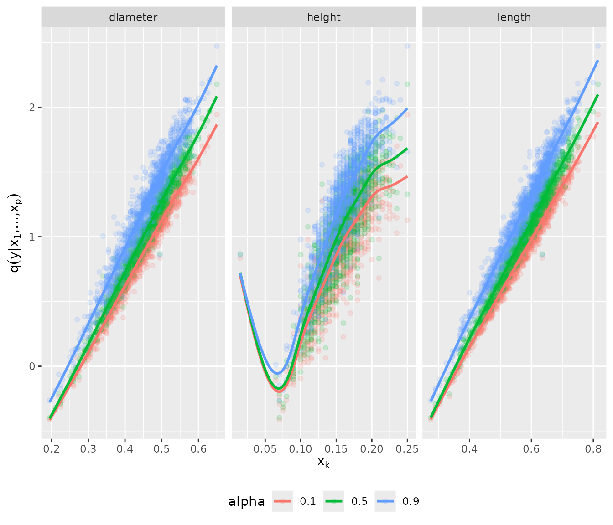
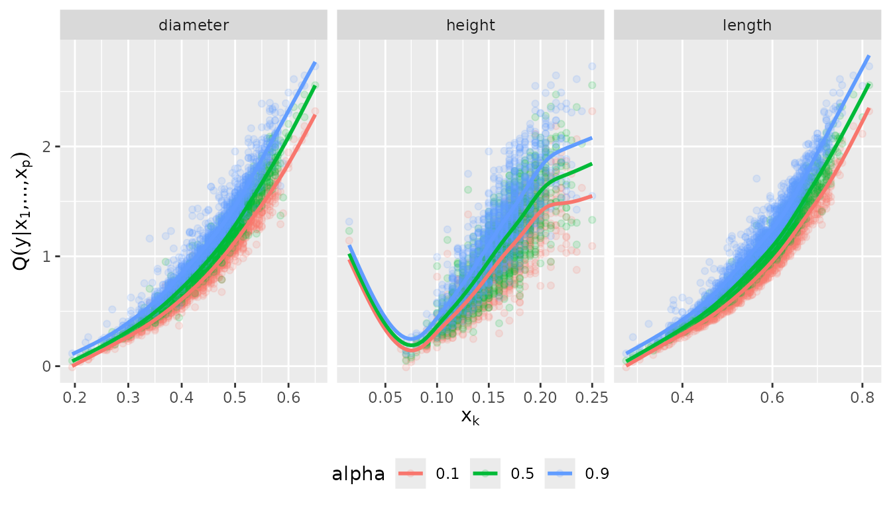

Example usage of the vinereg package
Daniel Kraus and Claudia Czado
September 2017
Source:vignettes/abalone-example.Rmd
abalone-example.RmdThis file contains the source code of an exemplary application of the D-vine copula based quantile regression approach implemented in the R-package vinereg and presented in Kraus and Czado (2017): D-vine copula based quantile regression, Computational Statistics and Data Analysis, 110, 1-18. Please, feel free to address questions to daniel.kraus@tum.de.
Data analysis
set.seed(5)We consider the data set abalone from the UCI Machine
Learning Repository (https://archive.ics.uci.edu/ml/datasets/abalone) and
focus on the female sub-population. In a first application we only
consider continuous variables and fit models to predict the quantiles of
weight (whole) given the predictors length,
diameter, and height.
Load and clean data
data(abalone, package = "AppliedPredictiveModeling")
colnames(abalone) <- c(
"sex", "length", "diameter", "height", "whole",
"shucked", "viscera", "shell", "rings"
)
abalone_f <- abalone %>%
dplyr::filter(sex == "F") %>% # select female abalones
dplyr::select(-sex) %>% # remove id and sex variables
dplyr::filter(height < max(height)) # remove height outlier
pairs(abalone_f, pch = ".")
D-vine regression models
Parametric D-vine quantile regression
We consider the female subset and fit a parametric regression D-vine for the response weight given the covariates len, diameter and height (ignoring the discreteness of some of the variables). The D-vine based model is selected sequentially by maximizing the conditional log-likelihood of the response given the covariates. Covariates are only added if they increase the (possibly AIC- or BIC-corrected) conditional log-likelihood.
We use the function vinereg() to fit a regression D-vine
for predicting the response weight given the covariates
length, diameter, and height. The
argument family_set determines how the pair-copulas are
estimated. We will only use one-parameter families and the t
copula here. The selcrit argument specifies the penalty
type for the conditional log-likelihood criterion for variable
selection.
fit_vine_par <- vinereg(
whole ~ length + diameter + height,
data = abalone_f,
family_set = c("onepar", "t"),
selcrit = "aic"
)The result has a field order that shows the selected
covariates and their ranking order in the D-vine.
fit_vine_par$order## [1] "length" "height" "diameter"The field vine contains the fitted D-vine, where the
first variable corresponds to the response. The object is of class
"vinecop_dist" so we can use rvineocpulib’s
functionality to summarize the model
summary(fit_vine_par$vine)## # A data.frame: 6 x 11
## tree edge conditioned conditioning var_types family rotation parameters df
## 1 1 1, 2 c,c gumbel 180 5.2 1
## 1 2 2, 4 c,c gumbel 180 2.4 1
## 1 3 4, 3 c,c gumbel 180 2.4 1
## 2 1 1, 4 2 c,c t 0 0.45, 20.20 2
## 2 2 2, 3 4 c,c t 0 0.91, 4.68 2
## 3 1 1, 3 4, 2 c,c t 0 0.31, 7.39 2
## tau loglik
## 0.81 1629
## 0.58 672
## 0.59 709
## 0.30 147
## 0.73 1193
## 0.20 72We can also plot the contours of the fitted pair-copulas.
contour(fit_vine_par$vine)
Estimation of corresponding conditional quantiles
In order to visualize the predicted influence of the covariates, we plot the estimated quantiles arising from the D-vine model at levels 0.1, 0.5 and 0.9 against each of the covariates.
# quantile levels
alpha_vec <- c(0.1, 0.5, 0.9) We call the fitted() function on
fit_vine_par to extract the fitted values for multiple
quantile levels. This is equivalent to predicting the quantile at the
training data. The latter function is more useful for out-of-sample
predictions.
pred_vine_par <- fitted(fit_vine_par, alpha = alpha_vec)
# equivalent to:
# predict(fit_vine_par, newdata = abalone.f, alpha = alpha_vec)
head(pred_vine_par)## 0.1 0.5 0.9
## 1 0.6719522 0.7666997 0.8715491
## 2 0.6969903 0.7903960 0.9012124
## 3 0.6794323 0.7842671 0.8916937
## 4 0.7755592 0.8800229 0.9974089
## 5 0.5952851 0.6997763 0.8272583
## 6 0.6757838 0.7729635 0.8858529To examine the effect of the individual variables, we will plot the predicted quantiles against each of the variables. To visualize the relationship more clearly, we add a smoothed line for each quantile level. This gives an estimate of the expected effect of a variable (taking expectation with respect to all other variables).
plot_effects(fit_vine_par)## `geom_smooth()` using method = 'gam' and formula = 'y ~ s(x, bs = "cs")'
The fitted quantile curves suggest a non-linear effect of all three variables.
Comparison to the benchmark model: linear quantile regression
This can be compared to linear quantile regression:
pred_lqr <- pred_vine_par
for (a in seq_along(alpha_vec)) {
my.rq <- quantreg::rq(
whole ~ length + diameter + height,
tau = alpha_vec[a],
data = abalone_f
)
pred_lqr[, a] <- quantreg::predict.rq(my.rq)
}
plot_marginal_effects <- function(covs, preds) {
cbind(covs, preds) %>%
tidyr::gather(alpha, prediction, -seq_len(NCOL(covs))) %>%
dplyr::mutate(prediction = as.numeric(prediction)) %>%
tidyr::gather(variable, value, -(alpha:prediction)) %>%
ggplot(aes(value, prediction, color = alpha)) +
geom_point(alpha = 0.15) +
geom_smooth(method = "gam", formula = y ~ s(x, bs = "cs"), se = FALSE) +
facet_wrap(~ variable, scale = "free_x") +
ylab(quote(q(y* "|" * x[1] * ",...," * x[p]))) +
xlab(quote(x[k])) +
theme(legend.position = "bottom")
}
plot_marginal_effects(abalone_f[, 1:3], pred_lqr)
Nonparametric D-vine quantile regression
We also want to check whether these results change, when we estimate the pair-copulas nonparametrically.
fit_vine_np <- vinereg(
whole ~ length + diameter + height,
data = abalone_f,
family_set = "nonpar",
selcrit = "aic"
)
fit_vine_np## D-vine regression model: whole | length, height, diameter
## nobs = 1306, edf = 94.85, cll = 1206.93, caic = -2224.16, cbic = -1733.35
contour(fit_vine_np$vine)Now only the length and height variables are selected as predictors. Let’s have a look at the marginal effects.
plot_effects(fit_vine_np, var = c("diameter", "height", "length"))## `geom_smooth()` using method = 'gam' and formula = 'y ~ s(x, bs = "cs")'
The effects look similar to the parametric one, but slightly more wiggly. Note that even the diameter was not selected as a covariate, it’s marginal effect is captured by the model. It just does not provide additional information when height and length are already accounted for.
Discrete D-vine quantile regression
To deal with discrete variables, we use the methodology of Schallhorn et al. (2017). For estimating nonparametric pair-copulas with discrete variable(s), jittering is used (Nagler, 2017).
We let vinereg() know that a variable is discrete by
declaring it ordered.
abalone_f$rings <- as.ordered(abalone_f$rings)
fit_disc <- vinereg(rings ~ ., data = abalone_f, selcrit = "aic")
fit_disc## D-vine regression model: rings | shell, shucked, whole, height, viscera, length, diameter
## nobs = 1306, edf = 9, cll = -2781.56, caic = 5581.12, cbic = 5627.7
plot_effects(fit_disc)## `geom_smooth()` using method = 'loess' and formula = 'y ~ x'
References
Kraus and Czado (2017), D-vine copula based quantile regression, Computational Statistics and Data Analysis, 110, 1-18
Nagler (2017), A generic approach to nonparametric function estimation with mixed data, Statistics & Probability Letters, 137:326–330
Schallhorn, Kraus, Nagler and Czado (2017), D-vine quantile regression with discrete variables, arXiv preprint